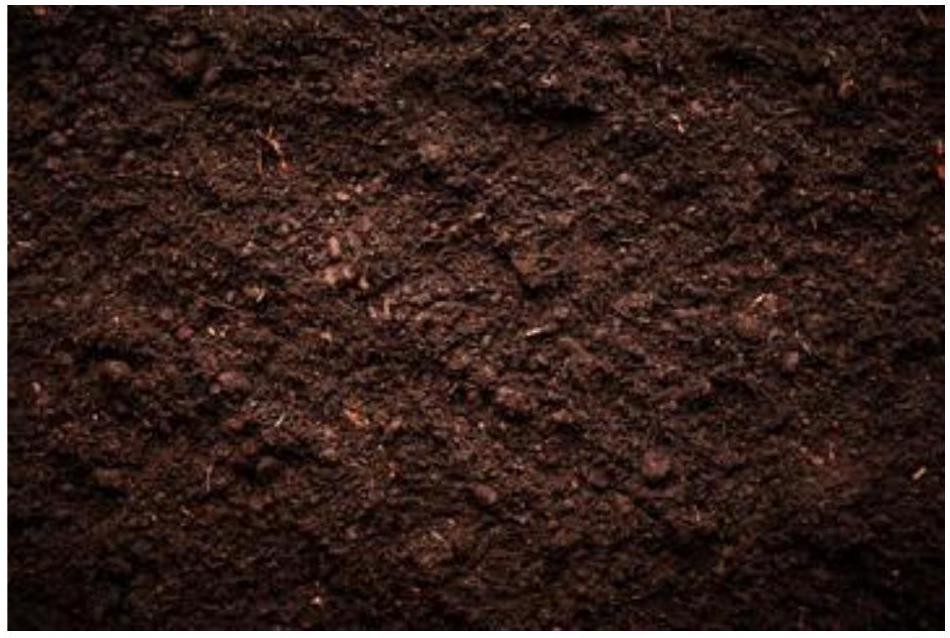

SOIL COMPOSITION
1.4 Soil Composition
Soil composition refers to the mixture of various materials that make up soil. It is a crucial factor in determining the soil's fertility, drainage, and overall suitability for supporting plant growth. Soil is composed of several key components, including minerals, organic matter, water, and air. The proportions of these components vary from one soil to another and influence its properties.
Key Components of Soil Composition:
1. Mineral Particles (45%)
These are small fragments of rocks and minerals that come from the weathering of parent material (such as bedrock). The size of mineral particles in soil can vary and is categorized into three types:
Sand: Large particles that are gritty and allow for good drainage but do not hold nutrients well.
Silt: Smaller particles that feel smooth and soft, helping retain moisture and nutrients.
Clay: Tiny particles that are sticky when wet and retain water and nutrients well but can drain poorly if compacted.
The relative amounts of sand, silt, and clay determine the soil texture, which affects water retention, air circulation, and nutrient availability.
2. Organic Matter (5%)
Humus: This is the decomposed material from plants, animals, and microorganisms. Humus is rich in nutrients and contributes to soil fertility by improving its structure, water-holding capacity, and nutrient retention.
Organic matter also promotes healthy soil organisms, such as earthworms, which further aid in the breakdown of organic materials and improve soil aeration and structure.
3. Water (25%)
Water in the soil exists in pores between soil particles and is essential for plant growth. It dissolves nutrients and minerals that plants can absorb through their roots. Soil water content varies depending on the type of soil, weather, and the presence of plants.
The soil's ability to retain water depends on its texture. Clay soils, for example, hold more water, while sandy soils drain quickly.
4. Air (25%)
Soil also contains air, which fills the pore spaces between the soil particles. Air is vital for the respiration of plant roots and soil organisms.
Well-aerated soils allow oxygen to reach plant roots and other organisms, while poorly drained soils may become waterlogged and restrict the flow of air to the roots, leading to reduced plant health.
Soil Horizons:
Soil is typically organized into layers, known as horizons, each with different characteristics:
O Horizon (Organic Layer): The topmost layer, composed of organic material like leaves, dead plants, and animals, as well as decomposed organic matter (humus).
A Horizon (Topsoil): A mix of organic material and mineral particles. This layer is rich in nutrients and supports plant growth.
B Horizon (Subsoil): Contains mineral particles and may accumulate nutrients leached from the upper layers. It has less organic matter and is typically more compact.
C Horizon (Parent Material): Made up of weathered rock and larger soil particles that have not yet fully broken down into smaller components.
R Horizon (Bedrock): The deepest layer, consisting of unweathered rock.
Soil Types Based on Composition:
The proportions of sand, silt, and clay determine the soil type:
1. Sandy Soil: High in sand, it drains quickly but doesn't retain many nutrients. It's loose and airy but may require frequent watering and fertilizing.
2. Clay Soil: High in clay, it retains moisture well and holds nutrients but may become compacted and poorly drained, leading to root problems.
3. Loamy Soil: A balanced mix of sand, silt, and clay, considered ideal for most plants. Loam is fertile, drains well, and holds moisture effectively.
Importance of Soil Composition:
Plant Growth: Soil composition affects how well plants grow, as it influences nutrient availability, water retention, and root growth. Different plants thrive in different soil types.
Soil Fertility: The organic matter (humus) and minerals in the soil provide essential nutrients to plants. Soil with a good balance of nutrients and proper texture supports healthy plant growth.
Water Retention and Drainage: Soil composition determines how well water is held and drained, influencing plant health. Soils with good drainage prevent root rot, while those with good moisture retention help plants survive dry periods.
Understanding soil composition helps farmers, gardeners, and scientists manage soil for optimal plant growth and sustainable agricultural practices.
a) garden soil sample
Garden Soil
b) Relate components of soil to its productivity in Agriculture
The components of soil directly influence its productivity in agriculture by determining how well it can support plant growth and provide the necessary nutrients, water, and air. Soil productivity is crucial for successful crop yields, and the balance of various soil components plays a significant role in how productive the soil can be. Let's relate the key components of soil to its agricultural productivity:
-
1. Mineral Particles (Sand, Silt, and Clay)
Effect on Soil Texture: The proportions of sand, silt, and clay in the soil determine its texture, which affects its ability to retain water, drain excess moisture, and hold nutrients.
Sandy Soil: High in sand, this soil type drains quickly and doesn't retain nutrients well, which can lead to nutrient deficiencies for plants. While it's easy to till, it requires frequent fertilization and irrigation to maintain productivity.
Clay Soil: High in clay, this soil holds water and nutrients well but may become compacted, making it harder for plant roots to grow. This can cause poor aeration and waterlogging, leading to root rot. However, if managed properly, clay soil can be very productive.
Loam (Ideal Soil Texture): A balanced mixture of sand, silt, and clay, loamy soil has good water retention and drainage properties, ideal for plant roots. It supports a wide variety of crops because it provides optimal nutrient and moisture levels. It is considered the most productive soil for agriculture.
Impact on Productivity: Soils with a balanced texture (like loam) are typically the most productive, supporting healthy root systems, allowing for good nutrient uptake, and promoting water retention without waterlogging.
-
2. Organic Matter (Humus and Decomposed Material)
Role in Soil Fertility: Organic matter is essential for improving soil structure, water retention, and nutrient availability. As organic matter decomposes, it forms humus, which enriches the soil and enhances its fertility.
Improves Soil Structure: Organic matter creates pore spaces that allow air and water to move freely in the soil, preventing compaction and improving drainage.
Nutrient Release: Humus acts as a reservoir of essential nutrients, slowly releasing them to plants as needed.
Microbial Activity: Organic matter supports beneficial soil organisms such as earthworms, bacteria, and fungi, which decompose organic materials and recycle nutrients, further enriching the soil.
Impact on Productivity: Soils rich in organic matter are more fertile, able to retain water, and better able to supply plants with essential nutrients. This enhances plant growth and productivity. Regular addition of organic matter (e.g., compost) can significantly improve soil health and agricultural yields.
-
3. Water
Soil Water Availability: Water is essential for plant growth as it dissolves nutrients, facilitates nutrient uptake through plant roots, and aids in photosynthesis. However, the availability of water in soil depends on its texture and organic matter content.
Water-Holding Capacity: Clay-rich soils hold more water but may become waterlogged, while sandy soils drain quickly and may not retain enough moisture for crops. Loamy soils have the ideal balance of water retention and drainage.
Water Drainage: Well-drained soils prevent root rot and other water-related diseases. Excessive water in poorly-drained soils can stunt plant growth, while inadequate water in dry soils leads to drought stress.
Impact on Productivity: Consistent, adequate soil moisture is vital for plant growth. Soil that retains and drains water effectively supports crop productivity, especially during dry periods. Crops in well-moisturized soil are more likely to thrive and produce higher yields.
-
4. Air (Soil Aeration)
Oxygen Availability: Soil needs to have enough air (specifically oxygen) for the roots of plants and beneficial soil organisms to function properly. Oxygen is necessary for root respiration and microbial activity that break down organic matter.
Soil Compaction: If soil is compacted (often due to over-tilling or heavy machinery), air pockets are reduced, restricting oxygen availability to roots and soil organisms. This can hinder plant growth and reduce productivity.
Well-Aerated Soil: Soils that are not too compacted and have proper aeration allow roots to grow freely and receive adequate oxygen. This improves root development, nutrient absorption, and overall plant health.
Impact on Productivity: Proper soil aeration is crucial for root development and microbial health. Soils that are well-aerated allow for healthy plant growth and better productivity, as roots can access nutrients and oxygen more effectively.
-
5. Soil Organisms
Role in Soil Health: Soil organisms, such as earthworms, fungi, bacteria, and insects, play a critical role in soil health by breaking down organic material and recycling nutrients. These organisms help in the formation of humus and enhance soil fertility.
Nutrient Cycling: Decomposers break down organic matter into essential nutrients, making them available to plants.
Soil Structure: Earthworms and other organisms create channels in the soil, improving soil aeration, water movement, and root penetration.
Pest Control: Beneficial organisms can help control harmful pests, reducing the need for chemical pesticides and improving overall soil health.
Impact on Productivity: Healthy soil ecosystems with abundant beneficial organisms support the breakdown of organic matter, nutrient cycling, and improved soil structure. This leads to more fertile and productive soils that can sustain high crop yields.
-
6. Nutrients (Macronutrients and Micronutrients)
Nutrient Availability: Soil fertility is largely determined by the nutrients it contains. The primary macronutrients-nitrogen (N), phosphorus (P), and potassium (K)-are essential for plant growth, while micronutrients like iron, zinc, and manganese are also necessary in smaller amounts.
Nutrient Deficiencies: Soils lacking in certain nutrients can lead to poor plant growth, stunted crops, or nutrient deficiency symptoms such as yellowing leaves (nitrogen deficiency) or weak root development (phosphorus deficiency).
Soil Amendments: Farmers often add fertilizers to the soil to correct nutrient deficiencies and improve productivity. Organic matter also helps improve nutrient availability in the soil.
Impact on Productivity: Adequate availability of essential nutrients is crucial for plant health and high crop yields. Fertile soils with sufficient macro- and micronutrients support robust plant growth, leading to increased agricultural productivity.
-
7. Soil pH
Impact on Nutrient Availability: The pH level of soil affects how readily nutrients are available to plants. Most plants prefer a neutral to slightly acidic soil (pH 6-7), where most nutrients are easily accessible.
Acidic Soil (Low pH): Nutrients like phosphorus may become less available to plants in acidic soils. Some plants (e.g., blueberries) prefer acidic soils, but for most crops, excessive acidity can stunt growth.
Alkaline Soil (High pH): In alkaline soils, some nutrients, such as iron and zinc, become less available, leading to nutrient deficiencies.
pH Adjustments: Lime can be added to acidic soils to raise the pH, while sulfur can lower the pH in alkaline soils.
Impact on Productivity: A soil with the right pH ensures that nutrients are readily available for plant uptake. Soils that are too acidic or alkaline can hinder nutrient absorption, reducing crop productivity. Correcting soil pH can significantly improve plant growth and yields.
Conclusion:
The components of soil-such as mineral particles, organic matter, water, air, soil organisms, nutrients, and pH -are intricately connected and influence its overall productivity in agriculture. Healthy, fertile soil with balanced components supports optimal plant growth, providing the necessary resources for high crop yields. Understanding and managing soil composition is essential for maintaining soil health, enhancing agricultural productivity, and ensuring sustainable farming practices.
c) How to explore presence of air in a sample garden soil
Exploring the presence of air in a sample of garden soil is an important way to understand soil aeration, which affects root growth, water drainage, and the overall health of plants. Air in soil is found in the pore spaces between soil particles, and its presence is essential for plant roots and soil organisms to receive oxygen. There are several methods to explore the presence and quantity of air in soil, both qualitative and quantitative.
Methods to Explore Air in Garden Soil:
-
1. Soil Respiration Test (Qualitative Test)
Purpose: This test measures the amount of carbon dioxide ($ \text{CO}_{2} $) released by soil organisms during respiration, which indirectly indicates the amount of air (oxygen) present for microbial activity.
How to Do It:
Collect a soil sample from the garden soil at a depth of around 5-10 cm (2-4 inches).
Place the soil in a clear container or jar.
Seal the container with a lid or plastic wrap, leaving a small hole to allow gases to escape.
After 24 hours, observe any changes in the condensation inside the jar. The presence of increased moisture or foggy glass can suggest microbial activity and $\text{CO}_{2}$ production.
Alternatively, you can use a $\text{CO}_{2}$ indicator (such as a pH indicator) to measure the amount of $\text{CO}_{2}$ present.
Interpretation: A high level of microbial activity ($\text{CO}_{2}$ production) indicates that the soil has sufficient oxygen for organisms to respire, suggesting good soil aeration.
-
2. Soil Compaction and Structure Test (Physical Observation)
Purpose: This method helps you assess whether the soil is compacted or if there is enough space for air to move through the soil.
How to Do It:
Take a soil sample from different areas of the garden, preferably from both dry and wet sections, as compaction affects air spaces.
Squeeze a handful of soil tightly in your fist.
Observe how the soil behaves:
If the soil easily falls apart or crumbles, it is likely wellaerated and not compacted.
If the soil remains in a hard, solid mass without crumbling, it may be compacted, which restricts air movement.
For a more accurate result, use a soil penetrometer to measure soil compaction directly by determining how much force is required to push a probe into the soil.
Interpretation: Well-aerated soil will allow air to flow freely through the pore spaces between soil particles. Compacted soil has fewer or smaller air pockets, which can limit root growth and microbial activity.
-
3. Water Drainage Test (Qualitative Test)
Purpose: The rate at which water drains through soil provides insight into its porosity and, by extension, its air content. Well-drained soil has sufficient air in its pores.
How to Do It:
Dig a hole in the soil about 15-20 cm deep (6-8 inches).
Fill the hole with water and observe how quickly the water drains.
Measure the time it takes for the water to drain completely (or until it stops draining).
Record the drainage rate:
Rapid drainage (within 30 minutes) indicates that the soil has larger pore spaces and more air.
Slow or no drainage may indicate compacted soil, clayey soil, or poor aeration.
Interpretation: Soils that drain quickly usually have good aeration with enough space for air. Poor drainage can be a sign of compacted soil or excessive clay content, both of which limit air movement in the soil.
-
4. Soil Texture and Structure Assessment
Purpose: This method involves evaluating the texture of the soil (sand, silt, clay) and its structure, which directly affect soil porosity and air retention.
How to Do It:
Take a sample of the garden soil and feel its texture. Is it gritty (sand), smooth (silt), or sticky (clay)?
Try rolling the soil into a ball or ribbon:
Sandy soil: Will feel gritty and may not form a ball easily. Sandy soils tend to have large pore spaces, allowing for good aeration.
Clayey soil: Will feel smooth and sticky. Clay has tiny particles that form smaller pore spaces, reducing air flow.
Loamy soil: Will have a balanced feel between gritty and smooth and should form a crumbly ball. Loamy soil usually has good porosity, offering a balance of air and water retention.
Interpretation: Sandy soils tend to have more air in their pores, but they may drain too quickly. Clayey soils may have fewer air pockets, leading to poor aeration. Loamy soils are typically the best for agriculture, as they strike a balance between air, water retention, and nutrient holding capacity.
-
5. Soil Air Content (Quantitative Test Using a Soil Air Probe)
Purpose: This test measures the actual volume of air present in the soil using specialized equipment.
How to Do It:
Use a soil air probe (available in agricultural supply stores or labs) to take samples from various depths of the soil (e.g., surface and root zone).
Insert the probe into the soil and measure the air content.
The probe provides a reading of the soil's air volume, often expressed as a percentage of the total soil volume.
Interpretation: Higher air content indicates that the soil is well-aerated, while low air content can suggest compacted soil or poor drainage, limiting root and microbial health.
Conclusion:
The presence of air in soil is vital for healthy plant growth and soil health. Various methods-such as observing soil texture and structure, conducting water drainage tests, assessing soil respiration, and using specialized equipment like a soil air probe-can provide insights into how well-aerated a soil sample is. Healthy garden soil typically has a good balance of air, water, and nutrients, which promotes robust root development, nutrient uptake, and microbial activity.